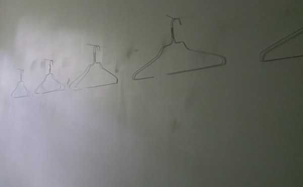
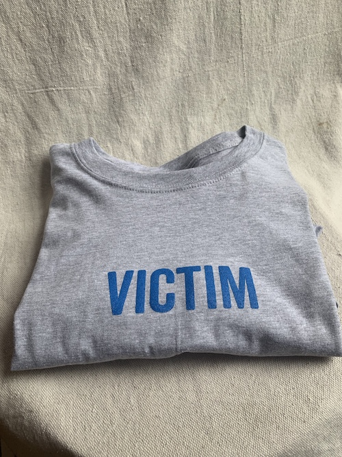

"Small" Things

Ketchup/Ketchdown (2018)
Ketchup packets mounted on wood.


Hold‘Um/Fold'um (2011)
Plaster cast of my arms, arms casted using alginate
"Less-Small" Things

Jerk/Tug (2013)
Wood
34"x 99"x 24"
Interactive wood sculpture- The dresser was created to be too wide to open in
motion by yourself. The knobs are too far apart, and the drawers can only be cleanly opened when a person is pulling each side.
Concepts ("Thinky" Things)



Independence (2015)- a series in which sections of wire hangers are used
to hang the hangers from which they were removed.



VictiMEzing (2019)- VictimShirts available for $40, Victimhoodies available for $80
Performance


4 Lewis street-Detail (2012)
Performance/installation- I had pizza delivered to this location.
I cleaned the stoop, constructed a crude mailbox and white picket fence.
The location, Which is on Lewis street in New London, CT., did not have
a listed address, so I gave it one for the purposes of ordering food.